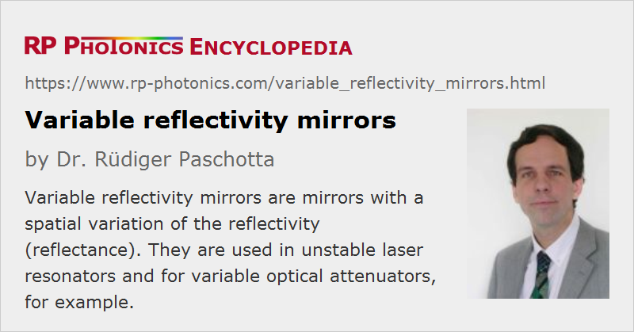

Variable Reflectivity Mirrors
Acronym: VRM
Definition: mirrors with a spatial variation of the reflectivity (reflectance)
Alternative terms: variable reflection mirrors, graded reflectivity mirrors
More general term: mirrors
More specific term: Gaussian mirrors
Opposite term: uniform mirrors
German: Gradientenspiegel
How to cite the article; suggest additional literature
Author: Dr. Rüdiger Paschotta
Variable reflectivity mirrors (also called variable reflection mirrors or graded reflectivity mirrors) are mirrors which exhibit a spatial variation of their reflectance (or reflectivity). Typically, the mirror design is radially symmetric, i.e., the reflectance depends only on the distance r from the center of the mirror. For example, there are Gaussian mirrors, where the reflectance is governed by a Gaussian function:
where w is a parameter determining the width of the Gaussian function. Other profiles are of course possible, for example supergaussian (where the exponent in the formula above is larger than 2), parabolic or Bessel function profiles. There are also mirrors where the reflectance depends on a linear coordinate.
Operation Principles and Fabrication of Variable Reflectivity Mirrors
One possibility is to deposit a single relatively highly reflecting layer with variable thickness on a mirror substrate. For example, it could be a metallic coating or a high-index dielectric material. One can also make dielectric multilayer mirrors where the layer thickness is made spatially dependent.
The spatial dependence can be introduced e.g. by using some mask which causes a spatially dependent flux of material to be deposited. For making mirrors with a purely radial dependence of the reflectivity, one would usually have the substrate rotating during deposition.
Other fabrication techniques are also possible, for example the spatially dependent modification of reflection properties after production of originally uniform mirrors. If such surface modifications are applied with laser radiation, a high flexibility for making various types of reflectivity shapes is achieved.
Note that a simple variation of layer thickness values of a Bragg mirror design with a Gaussian variation of Bragg wavelength, for example, will not translate into a Gaussian reflectance profile, as shown in Figure 1. This is because the interference conditions in such a mirror lead to a complicated dependence of the reflectance on the Bragg wavelength.
The variable reflectance may be associated with some deviation from a flat surface (or a predefined curved surface). However, such variations may be insignificant for many applications.
Note that besides the variable reflectance, there can be a variation of optical phase changes – not only due to thickness variations of the whole mirror, but also due to interference effects in dielectric coatings.
Only a small fraction of mirror manufacturers is able to produce variable reflectivity mirrors, and only a small fraction of used mirrors are of that type.
Applications of Variable Reflectivity Mirrors
A typical application for variable reflectivity mirrors is as output couplers in lasers with unstable resonators. Here, the variable reflectivity serves to limit the laser beam diameter in a resonator where the beam would otherwise tend to expand more and more. Often, one uses Gaussian reflectivity mirrors. That approach allows one to construct lasers with relatively large mode areas and still close to diffraction-limited output beams, i.e., high beam quality. This is used for some high-power lasers, including e.g. various solid-state lasers and CO2 lasers.
Another application is in variable attenuators. For example, one may use a mirror where the reflectance depends only on some x coordinate, such that the attenuation of an incident beam can be varied by translating the mirror in the x direction.
Suppliers
The RP Photonics Buyer's Guide contains 13 suppliers for variable reflectivity mirrors.
Questions and Comments from Users
Here you can submit questions and comments. As far as they get accepted by the author, they will appear above this paragraph together with the author’s answer. The author will decide on acceptance based on certain criteria. Essentially, the issue must be of sufficiently broad interest.
Please do not enter personal data here; we would otherwise delete it soon. (See also our privacy declaration.) If you wish to receive personal feedback or consultancy from the author, please contact him e.g. via e-mail.
By submitting the information, you give your consent to the potential publication of your inputs on our website according to our rules. (If you later retract your consent, we will delete those inputs.) As your inputs are first reviewed by the author, they may be published with some delay.
Bibliography
| [1] | H. Zucker, “Optical resonators with variable reflectivity mirrors”, Bell Syst. Tech. J. 49, 2349 (1970) |
| [2] | Y. Ananev and V. E. Shertobitov, “Influence of the edge effects on the properties of unstable resonators”, Sov. J. Quantum Electron. 1, 263 (1971) |
| [3] | A. N. Chester, “Mode selectivity and mirror misalignment effects in unstable laser resonators”, Appl. Opt. 11 (11), 2584 (1972) doi:10.1364/AO.11.002584 |
| [4] | S. De Silvestri et al., “Radially variable reflectivity output coupler of novel design for unstable resonators”, Opt. Lett. 12 (2), 84 (1987), doi:10.1364/OL.12.000084 |
| [5] | S. De Silvestri, P. Laporta, and V. Magni, “Laser output coupler based on a radially variable interferometer”, J. Opt. Soc. Am. A 4 (8), 1413 (1987), doi:10.1364/JOSAA.4.001413 |
| [6] | A. Parent and P. Lavigne, “Increased frequency conversion of Nd:YAG laser radiation with a variable-reflectivity mirror”, Opt. Lett. 14 (8), 399 (1989), doi:10.1364/OL.14.000399 (erratum: Opt. Lett. 14 (15), 830 (1989), doi:10.1364/OL.14.000830) |
| [7] | G. Emiliani et al., “Optical coatings with variable reflectance for laser mirrors”, Appl. Opt. 28 (14), 2832 (1989), doi:10.1364/AO.28.002832 |
| [8] | A. Caprara and G. C. Reali, “Time-resolved M2 of nanosecond pulses from a Q-switched variable-reflectivity-mirror Nd:YAG laser”, Opt. Lett., 17 (6), 414 (1992), doi:10.1364/OL.17.000414 |
| [9] | G. Duplain et al., “Graded-reflectance mirrors for beam quality control in laser resonators”, Appl. Opt. 32 (7), 1145 (1993), doi:10.1364/AO.32.001145 |
| [10] | A. A. Tovar and L. W. Casperson, “Generalized beam matrices: Gaussian beam propagation in misaligned complex optical systems”, J. Opt. Soc. Am. A 12 (7), 1522 (1995), doi:10.1364/JOSAA.12.001522 |
| [11] | G. de Vine et al., “Experimental demonstration of variable-reflectivity signal recycling for interferometric gravitational-wave detectors”, Opt. Lett. 27 (17), 1507 (2002), doi:10.1364/OL.27.001507 |
| [12] | R. Sundar, K. Ranganathan and S. M. Oak, “Generation of flattened Gaussian beam profiles in a Nd:YAG laser with a Gaussian mirror resonator”, Appl. Opt. 47 (2), 147 (2008), doi:10.1364/AO.47.000147 |
| [13] | L. Wei and G. Tatel, “Wavelength continuously tunable all-fiber flat-top comb filter based on a dual-pass Mach–Zehnder interferometer”, J. Lightwave Technol. 37 (15), 3740 (2019) |
| [14] | A. E. Siegman, Lasers, University Science Books, Mill Valley, CA (1986) |
See also: laser mirrors, unstable resonators
and other articles in the category general optics
|  |
If you like this page, please share the link with your friends and colleagues, e.g. via social media:
These sharing buttons are implemented in a privacy-friendly way!